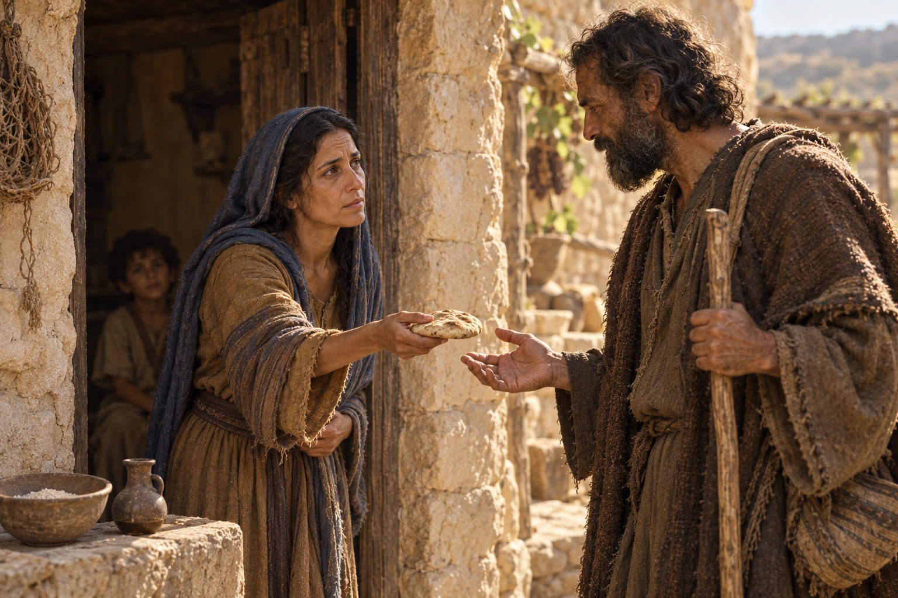
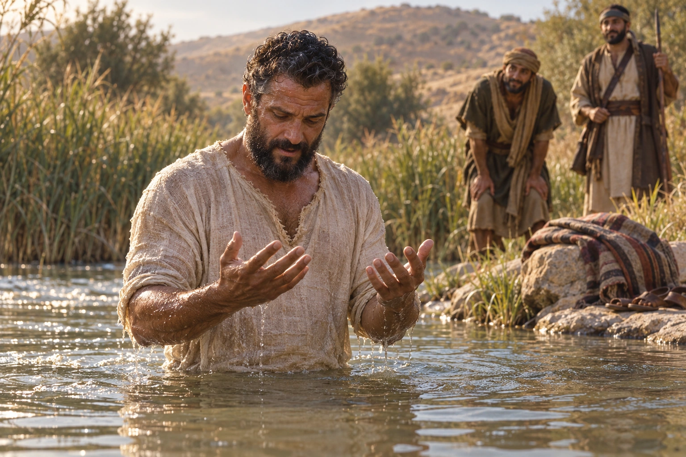

Adult Gospel Doctrine · Sunday, October 18, 2026
What Jesus
came to do.
Begin with Jesus’ mission. Use the second question if the conversation leads there.
The quick sheet contains your opening, two ideas, questions, and a closing. Background follows below.

For the TV
Use whichever screen you need.
Use the arrow keys, Space, or a presentation remote to move through the lesson. Choose a screen from the menu to jump directly to a passage, picture, or question. Press F for fullscreen and H to hide the controls.
Screens stay put until you move them. You can go straight to the closing from the menu or by pressing End.
Before class
Begin with Isaiah 61.
Read Isaiah 61:1–3 and Luke 4:16–21 together. Focus on what Jesus says He has come to do. If people have something to share about this passage, give them the time. You can spend the whole class with it.
Official study: Isaiah 58–66 · Isaiah 61 · Luke 4
A possible opening, in your own voice
“This week I drove someone who talked with me about his faith. He was finding encouragement in a new church, but he also spoke about how much he missed receiving Communion.
As we talked, I recognized something familiar. We understood some things differently, but I could understand missing a practice that helped him feel close to Jesus.
That conversation stayed with me as I read Isaiah 61. Isaiah describes people who need healing, freedom, and comfort. I recognize those needs in my own life, too. I’d like us to read these verses and notice what Jesus says He has come to offer.”
The first idea · This can be the whole lesson
Jesus brings God’s promised restoration.
Read Isaiah 61:1–3, then Luke 4:16–21. Give people time to notice the actions and the people receiving help.
Your observation: Jesus identifies Himself with Isaiah’s anointed messenger. The work He claims includes healing, freedom, and comfort. Ask people to notice both who receives help and what that tells us about Him.
Begin with this question
What do these promises help us understand about why we need Christ?
If useful: What would good news sound like to one of the people named in this passage?
Pause at “beauty for ashes,” if useful.
The TV screen carries the explanation: ashes marked mourning; a festive headdress marked honor and joy. The Hebrew words use the same three consonants, with the first two exchanging places. Press Next or the right arrow once to reveal the promise, then stay with the question as long as useful.
What does this picture help us understand about the kind of comfort Christ offers?
The tree opens from “Linger here” or the screen menu. Ordinary Next continues to Jesus’ declaration. The fuller background is below.
If someone opens up: acknowledge what they said and pause. “Thank you for trusting us with that. We can take a moment.” Let them choose how much to share. Avoid explaining why their suffering happened or inviting the room to solve it.
A second idea · Follow it if it fits
Jesus challenges His neighbors’ expectations.
Continue with Luke 4:22–30. Briefly explain the widow at Zarephath and Naaman; the full accounts can remain in your preparation.
Your observation: Luke records the crowd’s fury after Jesus invokes God’s help for outsiders. His claim, the rebuke about rejected prophets, and hometown expectations all shape the confrontation. The people’s precise motives remain partly inferred.
Begin with this question
What expectations does Jesus challenge in this exchange?
If useful: Where might we recognize those expectations in ourselves?
Keep this personal and reflective. Jesus makes His argument from Israel’s own scriptures. This scene concerns a particular congregation; it does not describe the character of Jewish people as a whole.
During the conversation
If you need a few words.
- If it is quiet: “Take another look. Which action catches your attention?” Allow silence.
- If an answer comes too quickly: “Let’s stay with what that person described for a moment.”
- If the conversation drifts: “Let’s bring that back to what Jesus says He has come to do.”
- If you do not know: “I’d like to study that more before giving an answer.”
A closing you can adapt
“We’ve spent time with Jesus’ description of His mission. As you return to these verses this week, notice one action you want to understand more deeply.”
Close from wherever the conversation has reached. There is no need to introduce the second idea in the final moments.
Background for your preparation
Isaiah describes a community rebuilding.
Read the whole chapter once. Verse 4 describes rebuilding ruined cities; verses 7–8 connect restoration with dignity and justice. The opening promises address a people living with devastation. Poor, captive, and oppressed can describe actual circumstances as well as offer spiritual applications. This broader reading is developed by Old Testament scholar Anathea Portier-Young.
Beauty for ashes: the Hebrew and the picture.
Ashes
אֵפֶר
’ēper · roughly “eh-fer”
Aleph · pe · resh
Beauty / festive headdress
פְּאֵר
pə’ēr · roughly “peh-air”
Pe · aleph · resh
The wordplay: the same three consonants appear in each word, with the first two exchanging places. The vowels and pronunciation also change. Hebrew reads from right to left; the TV screen gives each exchanged consonant a consistent color so the comparison is visible. See the Hebrew text of Isaiah 61:3.
The picture: ashes on the head expressed mourning. 2 Samuel 13:19 describes Tamar doing this after violence against her. Ashes identify grief in this image; they do not make the grieving person worthless. The noun translated “beauty” names an ornamental headdress or turban, associated here with joy and dignity. The same noun appears with the bridegroom’s adornment in Isaiah 61:10. See the Brown–Driver–Briggs entry for the headdress and the entry for ashes.
A few words are enough.
“Isaiah gives us a picture we can miss in English. Ashes on someone’s head showed their grief. The word translated ‘beauty’ means a festive headdress. Even the Hebrew letters change places. What does this picture help us understand about the kind of comfort Christ offers?”
Keep the promise gentle: the wording describes a gift in place of mourning. The wordplay does not prove that God caused a person’s suffering, needed it as raw material, or expects grief to end quickly. Let people speak about the comfort they still need. A useful follow-up is: “What might receiving His comfort look like while someone is still mourning?”
Connection to Nazareth: this promise belongs to the Isaiah passage surrounding Jesus’ declaration. Luke 4:18–19 does not quote Isaiah 61:3. We read it as part of the larger scriptural picture of the restoration Christians recognize in Christ’s mission.
If the conversation leads to the tree.
The KJV calls the restored people “trees of righteousness, the planting of the LORD.” Several translations render the tree image as “oaks.” The picture emphasizes people established by God; the NET translation and notes also discuss vindication and God’s justice. The next verse describes these people rebuilding ruined places.
Why might Isaiah describe restored people as something planted and growing?
Roots, patience, shelter, and care are useful reflections the image can invite. Let them remain invitations to think, rather than a demand that a hurting person demonstrate strength. The image of growth can give the class room to recognize that restoration takes time.
What is Jesus claiming?
Messiah and Christ mean the Anointed One. When Jesus identifies Himself with Isaiah’s anointed messenger, He claims the commission to enact the promised restoration. The Church treats this as a declaration of His messianic mission. See Messiah in the Guide to the Scriptures and Accepting Jesus Christ as the Promised Messiah.
The year of favor also evokes Jubilee: the release and return prescribed in Leviticus 25:8–13, 39–41. Land returns and Israelites serving because of poverty can return to their families. This is an interpretive connection to the imagery, rather than proof that the calendar year was a Jubilee. See Judith Jones’s discussion.
Follow the sequence before explaining the anger.
Luke 4:22 records amazement and the question about Joseph’s son. In verse 23 Jesus anticipates a demand for local miracles. He then speaks of prophetic rejection and recalls help given to two outsiders. Verse 28 places the fury after these examples. The sequence is explicit; interpreting it as wounded hometown entitlement is a plausible reading. Biblical scholar Ruth Anne Reese explains this reading.

Elijah · 1 Kings 17:8–24
The widow at Zarephath
God sends Elijah into Sidonian territory. The widow’s household receives food and life through his ministry.
Read the account ↗
Elisha · 2 Kings 5:1–14
Naaman the Syrian
A Syrian commander is healed. His story begins with a captive Israelite girl in his household; this example reaches into a history of conflict.
Read the account ↗The Nazareth painting is based on The Chosen’s scene. The widow and Naaman pictures are imagined scenes inspired by the show’s visual direction.
Keep the text and the dramatization distinct.
The Chosen, season 3, episode 3 dramatizes the scene. Its “I am the Law of Moses” dialogue is not recorded in Luke. Luke identifies a synagogue congregation and describes attempted mob violence; he does not narrate a formal blasphemy trial here.
A note on clothing: a tunic and outer wrap fit the broad historical setting. Historian Joan Taylor argues for an ordinary man’s shorter tunic, usually near the knee or upper calf, with a Jewish fringed outer garment. The new image follows the show’s wardrobe; its precise stripe pattern is a production detail. See Taylor’s What Did Jesus Wear?.
Luke’s quotation combines Isaiah 61 with language from Isaiah 58:6. It also ends before Isaiah 61:2 continues into vengeance. You can observe that emphasis on favor and release; Luke does not say the omitted phrase caused the anger. See Enter the Bible’s discussion of the combined quotation.
For Sunday: know what Jesus claims, follow the sequence of the crowd’s response, and be ready to explain the widow and Naaman. Bring in that background when it helps the conversation.